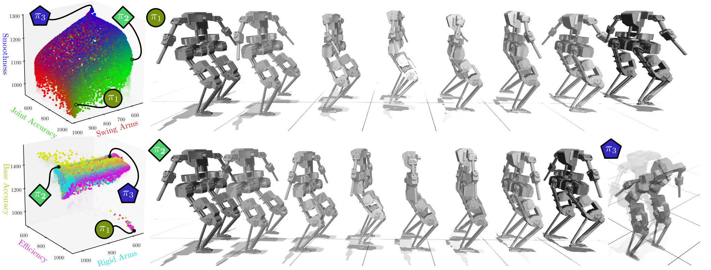
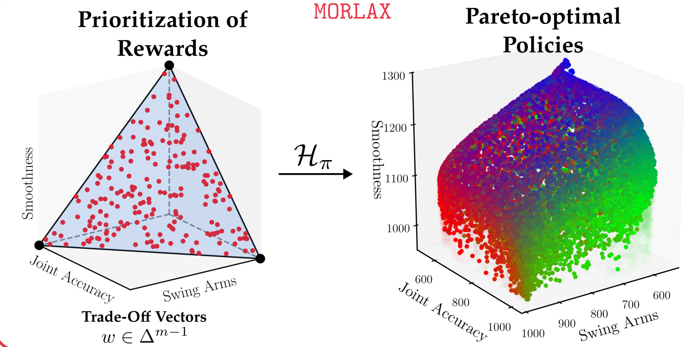
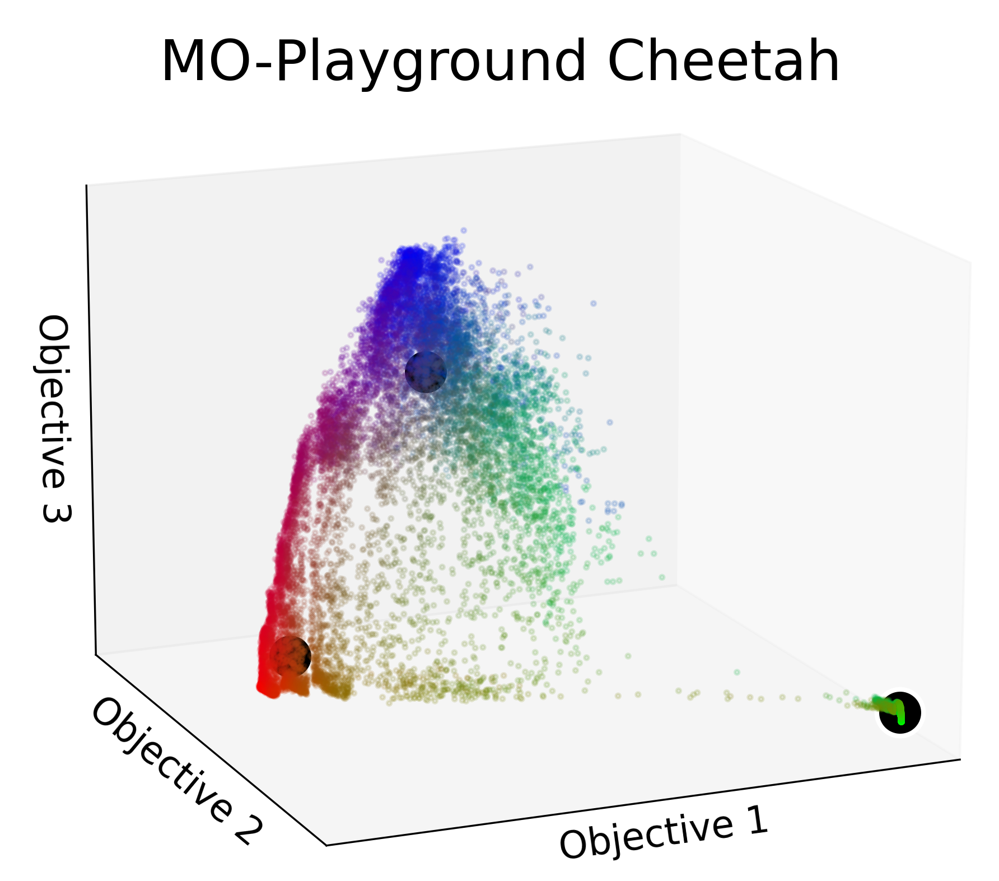
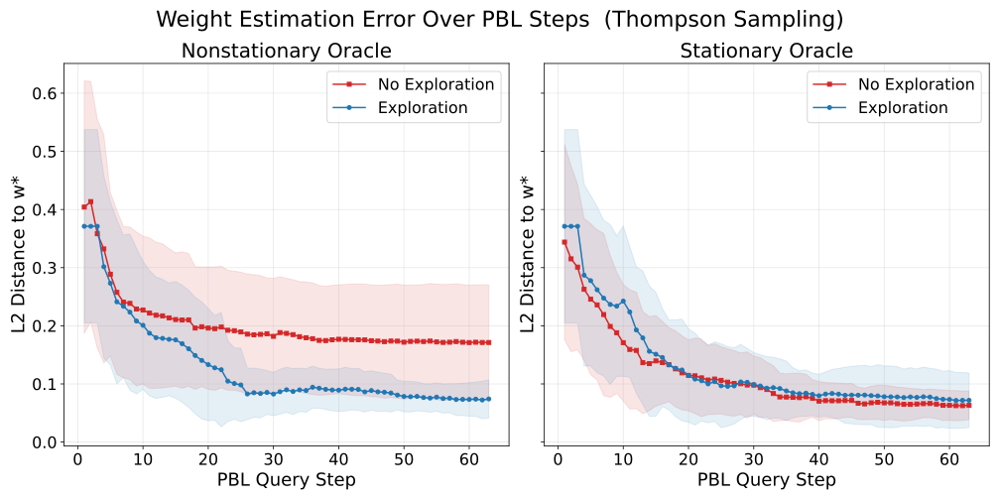
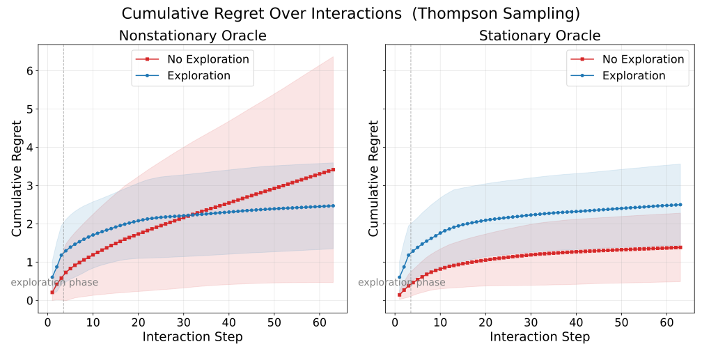
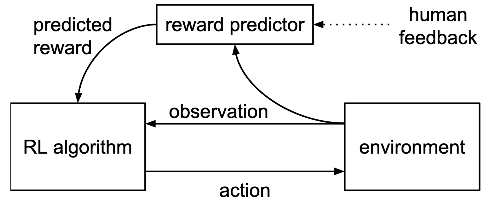
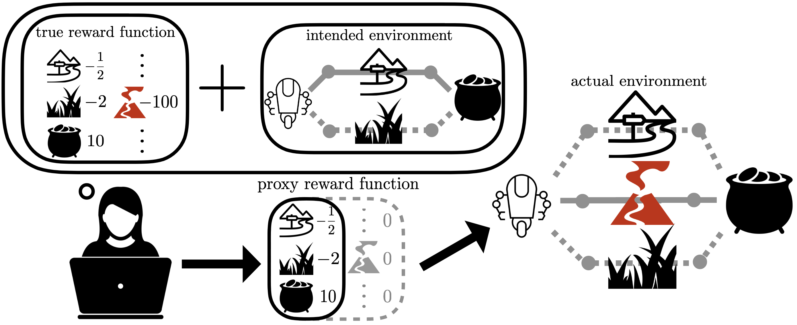
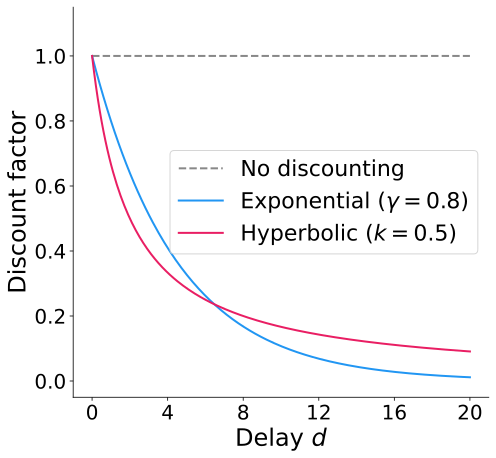
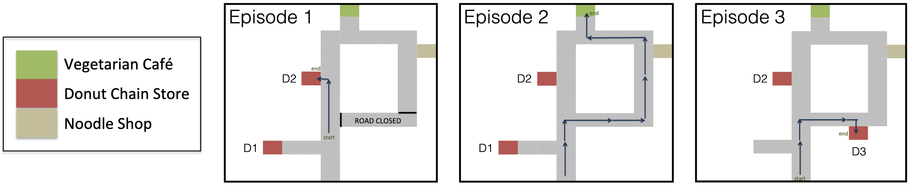
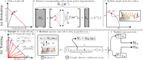

Learning reward functions from imperfect human feedback for robotic decision making
Committee: Prof. Matthew Gombolay (Chair), Prof. Maegan Tucker (Advisor), Prof. Sonia Chernova
Introduction: why learn rewards?
Reinforcement learning (RL) has yielded high performing robotic control.
Janwani et al. (2026, MO-playground: Massively parallelized multi-objective reinforcement learning for robotics)
Janwani et al. (2026, MO-playground: Massively parallelized multi-objective reinforcement learning for robotics)
Zakka et al. (2025, Mujoco playground)
Yet, this process hinges on having a well-defined reward function.
Definition: Reward Function
The reward function \(R : \mathcal{S} \times \mathcal{A} \rightarrow \mathbb{R}\) maps (state, action) pairs to a scalar signal that is maximized when the agent achieves its goal. The reward function could also encode how that behavior is achieved.
Not all objectives are easily describable via hand-crafted rewards.
Learning Rewards: the Canonical Paradigms
How do we learn rewards from human data?
Definition: Inverse Reinforcement Learning (IRL)
IRL recovers the reward, \(R\), that explains provided observations or demonstrations.
Abbeel et al. (2004, Apprenticeship learning via inverse reinforcement learning), Ziebart et al. (2008, Maximum entropy inverse reinforcement learning.).
Definition: Preference-Based Learning (PBL)
Rather than directly collect demonstrations, PBL infers a reward \(R\) from human preferences over pairs or sets of trajectories, actions, or outcomes.
Christiano et al. (2017, Deep reinforcement learning from human preferences).
Notably, PBL is less query efficient than IRL.
Definition: Active Preference Learning (APL)
APL enables the learner to actively select which preference queries to ask the human via the acquisition function.
Examples: regret minimization, discriminability, information gain, and volume removal.
Sadigh et al. (2017, Active preference-based learning of reward functions), Bıyık et al. (2019, Asking easy questions: A user-friendly approach to active reward learning).
Types of Imperfect Feedback
Human feedback is not always perfect. There exist three distinct kinds of imperfections
| Type | Definition |
|---|---|
| Inconsistency Evans et al. (2016, Learning the preferences of ignorant, inconsistent agents) | New feedback contradicts previous feedback in the same session. |
| Suboptimality Schrum et al. (2021, Improving robot-centric learning from demonstration via personalized embeddings), Hadfield-Menell et al. (2017, Inverse reward design), Armstrong et al. (2018, Occam’s razor is insufficient to infer the preferences of irrational agents) | Provided demonstrations consistently do not perfectly optimize the underlying reward \(R\). |
| Heterogeneity Schrum et al. (2021, Improving robot-centric learning from demonstration via personalized embeddings), Armstrong et al. (2018, Occam’s razor is insufficient to infer the preferences of irrational agents) | Feedback is influenced by the style, skill-set, and priorities of the particular demonstrator. |
Reward learning methods, like IRL and PBL, must account for these imperfections to accurately recover the true reward \(R\).
Inconsistency: Approximate Rationality
- Classic IRL assumes demonstrations are approximately optimal to the underlying reward \(R\). Ziebart et al. (2008, Maximum entropy inverse reinforcement learning.).
- PBL usually assumes a preference is likely to the extent that it leads to higher utility under estimate \(\hat{R}\).
Definition: Bradley-Terry Model
The Bradley-Terry model provides a probabilistic framework for pairwise comparison \((\xi_1, \xi_2)\):
\[P(\xi_1 \succ \xi_2) = \frac{\exp(\hat{R}(\xi_1))}{\exp(\hat{R}(\xi_1)) + \exp(\hat{R}(\xi_2))}\]
where \(\xi_1, \xi_2\) are sample robot trajectories.
BRADLEY et al. (1952, Rank analysis of incomplete block designs: The method of paired comparisons), Christiano et al. (2017, Deep reinforcement learning from human preferences).
Limitation: Approximate Rationality
- There are systematic biases found in each type of feedback suboptimality, heterogeneity, and other forms of inconsistency
- Not addressed by approximate rationality alone.
Evans et al. (2016, Learning the preferences of ignorant, inconsistent agents).
Inconsistency: Modeling Systematic Biases
- Hyperbolic Discounting: users may prefer lower utility, sooner, than higher utility later. Evans et al. (2016, Learning the preferences of ignorant, inconsistent agents)
- False Beliefs: people only have beliefs about the system state, which updates with experience. Evans et al. (2016, Learning the preferences of ignorant, inconsistent agents)
- Non-Stationary Rewards: people’s rewards may change as they gain experience. (2006, The construction of preference)
COACH uniquely handles inconsistency by connecting feedback with advantage, and uses this to learn new behaviors or unlearn old ones.
Yet, COACH would struggle if feedback was consistently bad, or even adversarial.
Suboptimality: Adapting to Human Errors
Policy decomposition is a way to describe bounded-rationality and complex decision-making in humans.
Definition: Policy Decomposition
Human policy \(\pi^{.}\) can be decomposed into a planner-reward pair \((p, R)\) via \(p(R) = \pi^.\). Planner \(p\) encodes the (ir)rationality, biases, and style of the human, while reward \(R\) describes the human’s goal.
Armstrong et al. (2018, Occam’s razor is insufficient to infer the preferences of irrational agents)
MIND-MELD accounts for suboptimality by learning to adjust and correct for annotator skill.
Schrum et al. (2021, Improving robot-centric learning from demonstration via personalized embeddings)
Inverse reward design accounts for suboptimality of hand-crafted rewards: adopting risk-averse behavior when needed.
Hadfield-Menell et al. (2017, Inverse reward design)
Heterogeneity: Style and Prioritization
- For the same reward \(R\), the existence of a planner \(p\) can result in heterogenous feedback. Armstrong et al. (2018, Occam’s razor is insufficient to infer the preferences of irrational agents)
- People prioritize various objectives to different degrees. Astudillo et al. (2024, Preferential multi-objective bayesian optimization), Dautenhahn et al. (2002, Imitation in animals and artifacts)
MIND-MELD learns to correct operator-specific suboptimality by learning personalized embeddings and correction terms given calibration tasks Schrum et al. (2021, Improving robot-centric learning from demonstration via personalized embeddings)
Many approaches fail here.
- Example: COACH cannot learn from heterogeneous annotators. MacGlashan et al. (2017, Interactive learning from policy-dependent human feedback)
Open Problems
How can we adjust for or detect imperfections in human feedback?
Can we improve the (real time) efficiency of reward learning algorithms for real-world tasks?
Do human-human interactions with annotators change the quality of feedback they provide?
How should we address non-stationary human preferences and rewards?
Research Objective: to enable easy exploration and personalization of robotic systems, specifically towards assitive devices, like exoskeletons, and legged locomotion.
Motivation: Exploring, then Answering
Research Question: Can enabling a person to explore their options before providing preferences reduce inconsistency in their feedback?

Constructed preferences. People’s preferences may not formalize on first glance–especially for non-experts.
Idea: develop an algorithm with a dedicated exploration phase to allow people to construct their preferences.
Proposed Approach
Explore, then Answer (EtA).
Step 1: Learning the Pareto-Optimal Policy Set
Goal: Learn Pareto-optimal Policy Family \(\mathcal{F}\) via MORL.
Definition: Policy Family
A policy family \(\mathcal{F}: \Delta^{M-1} \rightarrow \Theta_\pi\) optimally trades off \(M\) conflicting objectives \(\phi: \mathcal{T} \rightarrow \mathbb{R}^M\). \(\Delta^{M-1}\) is the simplex (i.e. \(M=3\) is a triangle).
Each \(w \in \Delta^{M-1}\) represents a tradeoff of objectives and specifies the reward \(R_w(\tau) = w^T\phi(\tau)\).
Lastly, \(\pi_w \in \Theta_\pi\) optimizes \(R_w\).
Definition: Pareto-Optimality
A policy \(\pi_w \in \mathcal{F}\) is Pareto-optimal if no other policy improves on one objective without worsening another. \(\mathcal{F}\) is the Pareto Front.

Step 2: Generating Samples for Exploration
Goal: Find \(K\) high-quality and diverse samples for the user to explore.
- High-quality: \(\pi_w\) is sourced from MORL, it is guaranteed to be Pareto optimal.
- Diverse: \(\pi_w\)’s expected performance \(f_w = \mathbb{E}_{\tau \sim \pi_w}[\phi(\tau)]\) serves as a behavior descriptor.
With performance descriptor \(f_w\), fit \(K\) clusters via \(k\)-medoids and return their centers.

Step 3: Finding the Desired Policy
Goal: Use active PBL to efficiently discover the user’s desired policy \(\pi^*\).
The reward \(R: \mathbb{R}^{M} \to \mathbb{R}\) is a Gaussian process, inputs lie in \(\Delta^{M-1}\)
Given preference data \(\mathcal{D}\), approximate the posterior \(P(R \mid \mathcal{D})\) as \(\mathcal{N}(\mu, \Sigma)\) centered on the MAP estimate: \(\hat{R} = \operatorname*{arg\,max}_{R \in \mathbb{R}^{|A|}} P(R \mid \mathcal{D})\)
Apply Thompson sampling on the model to query for new feedback
Acquisition: Thompson Sampling
At each iteration \(i\), we draw \(n\) posterior samples and select actions maximizing each sample: \[R_i \sim \mathcal{N}(\mu,\, \Sigma), \quad w_i = \operatorname*{arg\,max}_{w \in \mathcal{S}}\, R_i(w) \quad \forall\, k = 1, \ldots, n\]
in our case, we set \(n=2\).
Synthetic Evaluation
We construct synthetic oracles to test EtA on groundtruth preferences.
Stationary (S) Oracle
The S oracle maintains a preference \(w^*\) and reward \(R(w) = ||w^* - w||^2\). The \(S\) oracle noisely provides preference according to Boltzmann rationality \[ P(w_i \succ w_j) = \frac{\exp(\beta R(w_i))}{\exp(\beta R(w_i)) + \exp(\beta R(w_i))}, \] where \(\beta\) is a temperature parameter.
Non-stationary (NS) Oracle
The NS oracle has the same formulation as the S oracle, except that its preference is non-stationary:
\[w^*(C) = w_{\textrm{stable}} + \lambda(C) w_{\varepsilon}\]
where \(\lambda\) is a (monotonically decreasing) decay function, \(C\) is a coverage metric of \(\mathcal{F}\) given the oracle’s past experience, and \(w_{\varepsilon}\) represents initial preference corruption.
As the exploration phase shows diverse policies, \(C \rightarrow 1\) and \(\lambda(C) \rightarrow 0\), so \(w^* \rightarrow w_{\textrm{stable}}\). Several functions exist for \(\lambda\), we choose exponential decay.
Initial Results
We learn the preferences of these oracles using a simple ideal-point PBL model under a 2x2 study.


We apply Wilcoxon signed-rank test to our results:
- For NS oracle, \(L_2\) distance was significantly lower with an exploration stage \((p < 0.0001,~W=38)\).
- For S oracle, cummulative regret was significantly higher with an exploration stage \((p < 0.00001,~W=36)\).
Future Challenges and Limitations
While EtA results in improved preference alignment in simulation, and provides a pathway to join MORL with PBL, there are several key improvement areas.
- Comprehensive user study. Synthetic results may be circular. How do we verify success if groundtruth preferences are unobservable?
- Multiple preference constructions. Can we detect changepoints, when preference constructions occur?
- Interpretability. MORL’s performance measure \(f_w\) may not be salient to humans, can we learn a dissimilarity measure from feedback instead? Bobu et al. (2023, Sirl: Similarity-based implicit representation learning)
- Efficiency. Can we gather feedback in the exploration stage to improve PBL efficiency or calibration?
References
Questions?
Learning Rewards for Robotic-Decision Making.
Collecting Imperfect Human Feedback
PBL (and IRL) can be made active from a well-tuned acquisition function.
Definition: Acquisition Function
An acquisition function \(a\) is a strategy for selecting what queries to provide to the human to collect feedback. It is the central mechanism of active learning, enabling the learner to optimize data collection rather than passively collect feedback.
Strategic sampling can help minimize other sources of noise and imperfections in human feedback.
- User fatigue: feedback quality can diminish after long trials.
- Regret minimization: constant, bad behaviors can be dangerous, or uncomfortable for physical human-robot systems.
Sample Efficiency: Thompson Sampling
PBL (and IRL) can be made active from a well-tuned acquisition function.
Definition: Acquisition Function
An acquisition function \(a\) is a strategy for selecting what queries to provide to the human to collect feedback. It is the central mechanism of active learning, enabling the learner to optimize data collection rather than passively collect feedback.
Thompson Sampling: sample a reward function from the posterior and select the query that is optimal under that sample
\[\theta^* \sim p(\theta \mid \mathcal{D}), \qquad a^*(q) = \arg\max_q \; R_{\theta^*}(q)\]
Leveraging Preferences in Deep RL
How can we tractably learn a reward \(\hat{R_{\theta}}\) consistent with preferences over robot behaviors? \[\begin{align} \sum_{(s,~a)~\in~\tau_1} \hat{R}_{\theta}(s,a) > \sum_{(s,~a)~\in~\tau_2} \hat{R}_{\theta}(s,a) \implies \tau_1 \succ \tau_2 \end{align}\]
- Optimize \(\pi\) for \(\hat{R}\) using deep RL
- Rollout \(\pi\) to produce trajectory set \(\{\tau_1, \dots, \tau_i\}\).
- Select trajectory segments \((\sigma_1, \sigma_2)\) and query human for preference.
- Optimize \(\hat{R}\) to be consistent with those preferences.

Christiano et al. (2017, Deep reinforcement learning from human preferences).
Extracting a Reward from Preferences
Definition: Bradley-Terry Preference Model
\[\begin{align} P(\sigma^1 \succ \sigma^2 \mid \theta) = \frac{\exp \sum_{t} \hat{R}_{\theta}(s_t^1, a_t^1)}{\exp \sum_t \hat{R}_{\theta}(s_t^1, a_t^1) + \exp \sum_t \hat{R}_{\theta}(s_t^2, a_t^2)}, \qquad (s^i_t, a^i_t) \in \sigma_i \end{align}\]
- Learn an ensemble \(\hat{R}_{\theta_i}\).
- Query the human over \(\sigma^1\), \(\sigma^2\) that elicit the most disagreement over \(\hat{R}_{\theta_i}\).
- \(\mathcal{D} \leftarrow (\sigma^1, \sigma^2, \mu)\)
\(\mu\) is a distribution over \(\{1, 2\}\) representing user’s feedback.
\[\begin{align} \text{loss}(\theta) = -\sum_\mathcal{D}~\biggl[~&\mu(1) \log \hat{P}(\sigma^1 \succ \sigma^2 \mid \theta) \\+ &\mu(2) \log \hat{P}(\sigma^2 \succ \sigma^1 \mid \theta)\biggr] \\ \theta \leftarrow \nabla_\theta~\text{loss}(\theta) \end{align}\]
Christiano et al. (2017, Deep reinforcement learning from human preferences).
Results and Discussion

This approach works varyingly well. Non-stationarity somewhat clouds results.
Christiano et al. (2017, Deep reinforcement learning from human preferences).
Assumptions and Sources of Failure
- Assumes humans respond approximately optimally.
- Assumes annotators provide homogeneous preferences.
- Assumes preferences are made consistently over the whole learning process.
Your Feedback is Secretly an Advantage Function
Rather than learning a reward function, can we skip straight to robotic decision-making?
- Binary human feedback is policy-dependent
- Users judge current actions relative to other possible actions
This definition is synonymous with the advantage function
Definition: Advantage Function
The advantage function \(A\) roughly describes the relative utility of taking action \(a\) at state \(s\) in comparison to expected behavior.
\[A(s,a) = Q(s,a) - V(s)\]
MacGlashan et al. (2017, Interactive learning from policy-dependent human feedback).
Learning from Feedback without a Reward Function
With feedback akin to advantage, “COACH” can be updated via policy gradient, forgoing a critic entirely.
\[ g_\theta = \mathbb{E}_{\pi_\theta}\left[\nabla_\theta \log \pi_\theta(a \mid s) \, A^{\pi_\theta}(s, a)\right] \]
\[ g_\theta = \mathbb{E}_{\pi_\theta}\left[\nabla_\theta \log \pi_\theta(a \mid s) \, f_t\right] \]
COACH deals with time-sensitive feedback.
- Account for human reaction time using eligibility traces.
- Aggregate feedback to account for successive responses.
MacGlashan et al. (2017, Interactive learning from policy-dependent human feedback).
Discussion of Assumptions
- Inconsistency can increase in this situation due to time-pressure, negatively influencing human decision making.
- The correspondance problem can result in suboptimality if robot features are not well constructed.
- Heterogeneous feedback can lead the policy to ‘average’ its behavior.
MacGlashan et al. (2017, Interactive learning from policy-dependent human feedback).
Revisiting Handcrafted Rewards
Inverse Reward Design (IRD) reconsiders the human-crafted reward.
- Reward hacking
- Reward suboptimality
IRD suggests that hand-crafted rewards should be interpreted in the context in which they were specified.

“Human-specified rewards should be treated as an observation.”
Hadfield-Menell et al. (2017, Inverse reward design).
Boltzmann Rationality Applied to Reward Design
Hand crafted rewards are likely to the extent that they lead to high true utility in the environment.
Definition: Approximately Optimal Designer
Allow \(w\) to scalarize features \(\phi(\tau)\) for reward \(R = w^T\phi(\tau)\), then \[\begin{align} P(\tilde{w} \mid w^*, M) \propto \exp\left(\alpha~\mathbb{E}[{w^*}^T\phi(\tau) \mid \tau \sim \pi(\cdot \mid \tilde{w}, M)]\right) \end{align}\]
We can then use Bayes rule to develop a posterior over reward functions, given hand-crafted \(\tilde{w}\) and confidence \(\alpha\).
Lastly, risk-averse planning can be used to select trajectories that would maximize return of the true reward in the worst case.
Hadfield-Menell et al. (2017, Inverse reward design).
Human Study: Atalante Exoskeleton
How can we validate results on humans who don’t have groundtruth preferences?
Run a 3-group study (no repeat users): Control, ETA, Random Exploration.
- terminate runs when (1) preferences stabilize or (2) users tire
- random phase may struggle in highly multi-objective scenarios
Data collection plan:
- Mental/physical load, frustration: Likert-scale questionnare like NASA-TLX
- Efficiency: Queries required before preferences stabilized
Preliminaries: Idealistic Behavior
Agents optimize cummulative return, or value \(V\), by adhering to optimal behavior \(\pi^*\) \[\begin{align} V_{\pi^*}(s_0) = \sum_t R(s_t,a_t), \qquad s_{t+1} \sim T(s_t, a_t) ,~a_{t} \sim \pi^*(s_t) \end{align}\]
We can model this via Boltzmann Rationality.
Definition: Boltzmann Rationality
An approximately rational agent can be modeled via the recursive relationship found in Boltzmann Rationality, \[\begin{align} P(a \mid s) \propto \exp(\alpha Q(s,a)), \qquad Q(s, a) = R(s, a) + \mathbb{E}[Q(s',a')] \end{align}\] where \(s' \sim T(\cdot \mid s,a),~a' \sim P(\cdot \mid s')\) and \(Q\) is the quality function.
Imperfect Human Feedback: Inconsistency
Time inconsistency: apply hyperbolic discounting to model the prioritization of immediate rewards over long-term ones.

Naive: \(a' \sim P(\cdot \mid s, d)\)
Sophisticated: \(a' \sim P(\cdot \mid s, 0)\)
Evans et al. (2016, Learning the preferences of ignorant, inconsistent agents).
Imperfect Human Feedback: Inconsistency
False beliefs: update state knowledge with a prior belief \(p(s)\) and likelihood function \(p( o \mid s)\): \[p(s \mid o) \propto p(s)p(o \mid s)\]
Then, we can redefine our agent’s behavior in terms of belief \(p(s)\).
\[\begin{aligned} &P(a' \mid {\color{red}p(s)}, o, d) \propto \exp \left(\alpha Q({\color{red}p(s)}, a' \mid o, d) \right), \\ &Q({\color{red}p(s)}, a \mid o, d) = \underset{{\color{red}s \sim p(s | o)}}{\mathbb{E}} \left[ \frac{1}{1 + kd}R(s,a) + \underset{s',~{\color{red}o'},~a'}{\mathbb{E}}[Q({\color{red}p(s | o)}, a' \mid o', d + 1)] \right]. \end{aligned}\]Evans et al. (2016, Learning the preferences of ignorant, inconsistent agents).
Imperfect Human Feedback: Inconsistency
The paper demonstrated that their enhanced model with time-inconsistency and false beliefs aligned with humans.
They asked humans \((n=50)\) to explain observed behaviors, and fit their own model to those behaviors.

Found a large similarities between model and human explanations.
Evans et al. (2016, Learning the preferences of ignorant, inconsistent agents)
Imperfect Human Feedback: Suboptimality and Heterogeneity
Humans deviate from optimal behavior \(\pi^*\) due to bounded-rationality and complex decision-making: Boltzmann rationality is not necessarily correct.
Definition: Policy Decomposition
Human policy \(\pi^{.}\) can be decomposed into a planner-reward pair \((p, R)\) via \(p(R) = \pi^.\). Planner \(p\) encodes the (ir)rationality, biases, and style of the human, while reward \(R\) describes the human’s goal.
Policy decomposition is an underdetermined problem–additional constraints are needed to find unique solutions.
- Heterogeneity and suboptimality can be modeled via a planner.
- Simpler is not always better–degenerate decompositions have lower complexity than “reasonable” ones.
Armstrong et al. (2018, Occam’s razor is insufficient to infer the preferences of irrational agents)
MORLAX

GP-based PBL on a Simplex
Isometric Log-Ratio (ILR) Transform: \(\varphi: \Delta^{M-1} \to \mathbb{R}^{M-1}\), so that the GP operates on the intrinsic \((M-1)\)-dimensional geometry of the simplex rather than the redundant \(M\)-dimensional ambient space.
Given pairwise preference data \(\mathcal{D}\), we approximate the posterior \(P(R \mid \mathcal{D})\) as \(\mathcal{N}(\mu, \Sigma)\).
Acquisition: Thompson Sampling
At each iteration \(i\), we draw \(n\) posterior samples and select actions maximizing each sample: \[R_i^k \sim \mathcal{N}(\mu,\, \Sigma), \quad w_i^k = \varphi^{-1}\!\left(\operatorname*{arg\,max}_z{z \in A}\, R_i^k(z)\right) \quad \forall\, k = 1, \ldots, n\]
where \(n=2\) in our case.
Ideal point model
Ideal-Point Reward
The central modelling choice:
\[ R(\pi \mid w) = -\|w - w_\pi\|_2^2 \]
- Reward = negative squared distance between evaluator’s weight \(w\) and the policy’s tradeoff \(w_\pi\).
- Closer in tradeoff space \(\Rightarrow\) more preferred.
- Simpler than a GP and covers the possible preferences of the Synthetic Oracles
Likelihood: Bradley–Terry with Temperature
Given winner \(\pi^+\) and loser \(\pi^-\):
\[ P(\pi^+ \succ \pi^- \mid w) = \sigma\!\left(\frac{R(\pi^+ \mid w) - R(\pi^- \mid w)}{\beta}\right), \quad \sigma(z) = \frac{1}{1+e^{-z}} \]
- Temperature \(\beta > 0\) controls noise.
- \(\beta \to 0\): deterministic argmax
- \(\beta \to \infty\): uniform coin-flip
Prior and Posterior
Prior: Gaussian centered at the uniform simplex point:
\[ p(w) = \mathcal{N}\!\left(w \;\Big|\; \tfrac{1}{K}\mathbf{1},\; \sigma_0^2 I\right) \]
Negative log-posterior given comparisons \(\mathcal{D} = \{(w_+^{(n)}, w_-^{(n)})\}_{n=1}^N\):
\[ \ell(w) = \frac{1}{2}\left(w - \tfrac{1}{K}\mathbf{1}\right)^\top \Sigma_0^{-1}\left(w - \tfrac{1}{K}\mathbf{1}\right) + \sum_{n=1}^{N}\log\!\left(1 + e^{-z_n(w)}\right) \]
Laplace Approximation
Approximate the posterior as Gaussian at the MAP:
\[ p(w \mid \mathcal{D}) \approx \mathcal{N}\!\left(w \;\Big|\; \hat{w}_{\text{MAP}},\; H^{-1}\right) \]
\[ \hat{w}_{\text{MAP}} = \arg\min_w \ell(w), \qquad H = \nabla^2 \ell\!\left(\hat{w}_{\text{MAP}}\right) \]
- MAP found via L-BFGS (analytic gradient).
- \(\ell(w)\) is strictly convex \(\Rightarrow\) Laplace approximation is well-justified.
Acquisition: Thompson Sampling
- Draw \(\tilde{w} \sim p(w \mid \mathcal{D})\) from the Laplace posterior.
- Select:
- \(\pi_a = \arg\max_\pi R(\pi \mid \tilde{w})\) — best under the sample
- \(\pi_b = \arg\max_\pi R(\pi \mid \hat{w})\) — best under posterior mean
- Compare “optimistic scenario” vs. “current best guess” \(\Rightarrow\) queries near the decision boundary.
Summary
- Reward model: ideal-point \(R(\pi \mid w) = -\|w - w_\pi\|^2\), both on the \(K\)-simplex.
- Likelihood: Bradley–Terry + squared-distance \(\Rightarrow\) logit linear in \(w\) \(\Rightarrow\) Bayesian logistic regression.
- Posterior: Gaussian Laplace approximation at the MAP (L-BFGS + Hessian inversion).
- Acquisition: Thompson sampling using posterior mean and sample.
- Prediction: project posterior mean onto simplex, return nearest policy.
Simplification for Bayesian Log Regression
Substituting and expanding:
\[ \frac{R(\pi^+) - R(\pi^-)}{\beta} = \frac{-\|w - w_+\|^2 + \|w - w_-\|^2}{\beta} \]
\[ = \frac{2w^\top(w_+ - w_-) + \|w_-\|^2 - \|w_+\|^2}{\beta} \]
- The quadratic-in-\(w\) terms cancel.
- The logit is linear in \(w\) with effective feature \(x_{+-} = 2(w_+ - w_-)/\beta\).
- Inference reduces to ordinary Bayesian logistic regression.
Coverage Metric
How well the shown policies span the full policy space in normalized performance coordinates.
\[ \text{coverage} = 1 - \frac{\bar{d}_{\min}}{\sqrt{K}}, \qquad \bar{d}_{\min} = \frac{1}{N}\sum_{i=1}^{N} \min_{j~\in \text{ seen}} \lVert p_i - p_j \rVert_2 \]
- \(\bar{d}_{\min}\): average distance from each policy to its nearest shown policy
- \(\sqrt{K}\): diagonal of the \([0,1]^K\) hypercube (max possible distance on \(\Delta\))
- \(C \in [0, 1]\) and cannot decrease as more policies are shown.
- \(C \rightarrow 1\) = every policy has a nearby seen neighbor
- \(C \rightarrow 0\) = many policies don’t have a nearby seen neighbor